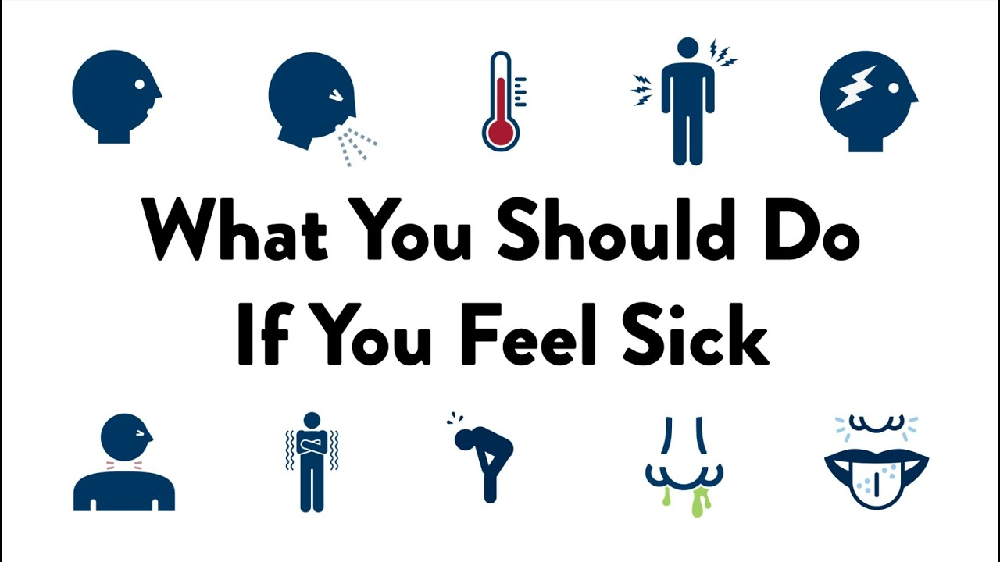

If you are sick with COVID-19 or think you might have COVID-19, follow the steps below to care for yourself and to help protect other people in your home and community.
Stay home except to get medical care;
●
Stay home. Most people with COVID-19 have mild illness and can recover at home without medical care. Do not leave your home, except to get medical care. Do not visit public areas.
●
Take care of yourself. Get rest and stay hydrated. Take over-the-counter medicines, such as acetaminophen, to help you feel better.
●
Stay in touch with your doctor. Call before you get medical care. Be sure to get care if you have trouble breathing, or have any other emergency warning signs, or if you think it is an emergency.
●
Avoid public transportation, ride-sharing, or taxis.
Separate yourself from other people As much as possible, stay in a specific room and away from other people and pets in your home. If possible, you should use a separate bathroom. If you need to be around other people or animals in or outside of the home, wear a mask.
Tell your close contacts that they may have been exposed to COVID-19. An infected person can spread COVID-19 starting 48 hours (or 2 days) before the person has any symptoms or tests positive. By letting your close contacts know they may have been exposed to COVID-19, you are helping to protect everyone.
●Additional guidance is available for those living in close quarters and shared housing.
●See COVID-19 and Animals if you have questions about pets.
●If you are diagnosed with COVID-19, someone from the health department may call you. Answer the call to slow the spread.
Monitor your symptoms
●Symptoms of COVID-19 include fever, cough, or other symptoms.
●Follow care instructions from your healthcare provider and local health department. Your local health authorities may give instructions on checking your symptoms and reporting information.
When to seek emergency medical attention
Look for
emergency warning signs* for COVID-19. If someone is showing any of these signs,
seek emergency medical care immediately:
• Trouble breathing
•Persistent pain or pressure in the chest
•New confusion
•Inability to wake or stay awake
•Pale, gray, or blue-colored skin, lips, or nail beds, depending on skin tone
*This list is not all possible symptoms. Please call your medical provider for any other symptoms that are severe or concerning to you.
Call 911 or call ahead to your local emergency facility: Notify the operator that you are seeking care for someone who has or may have COVID-19.
COVID 19 is infected all over the world